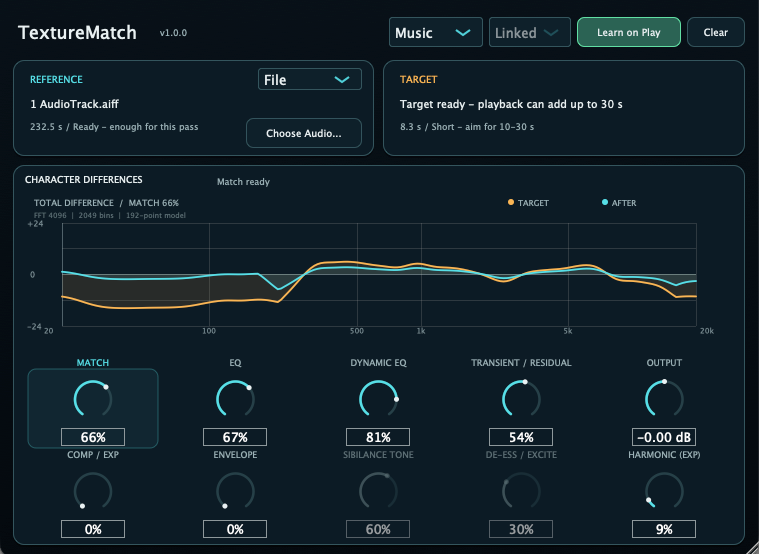

Version 1.1.0 — Out now.
Reference-Based Character Matching Plug-in
TextureMatch compares a Reference recording with the Target playing in your DAW. Instead of reducing the match to one static EQ curve, it applies separate stages for spectral character, level-dependent tone, transients and residuals, dynamics, envelope, Dialogue-mode sibilance, and experimental harmonic texture.
TextureMatch 1.1.0 adds preset management for saving and recalling Reference-based setups. The macOS installer includes AAX, AU, and VST3; Windows VST3 is provided as a separate ZIP package.
Spectrum matches static tonal character. Dynamic EQ handles the way that tone changes between quieter and louder parts.
Separates attack components from sustained components, then applies component-dependent tone matching instead of one shared correction.
Matches level-range behavior with compression or expansion-style processing.
Shapes attack and early-decay behavior without reducing the change to EQ alone.
In Dialogue mode, Sibilance Tone and De-ess / Excite match detected sibilant regions. Both stages are bypassed in Music mode.
The experimental harmonic-texture stage responds when the Reference has greater harmonic density than the Target.
1.1.0 • 2026-09-25 • Preset support
Adds a preset system that saves the current plug-in parameters together with the Reference audio. Saved setups can be recalled from the Preset menu and managed with Save As…, Rename…, Update, and Delete. Reference audio is stored with the preset so the setup does not depend on the original file remaining in the same location.
1.0.0 • 2026-09-24 • First release
Introduces Reference-based character matching with separate controls for static and level-dependent spectrum, transients and residuals, dynamics, envelope, Dialogue-mode sibilance, and experimental harmonic texture.
TextureMatch_1.1.0.pkg.TextureMatch-windows-vst3.zip.The macOS installer includes AAX / AU / VST3. AAX requires an AAX-compatible host.
TextureMatch.vst3 in a VST3 folder scanned by your DAW.
Email: kjdevapphelp@gmail.com
Please include: OS version, host DAW, plug-in format, TextureMatch version, and a short description of what you expected to hear or see.